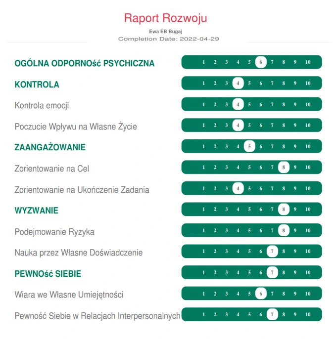
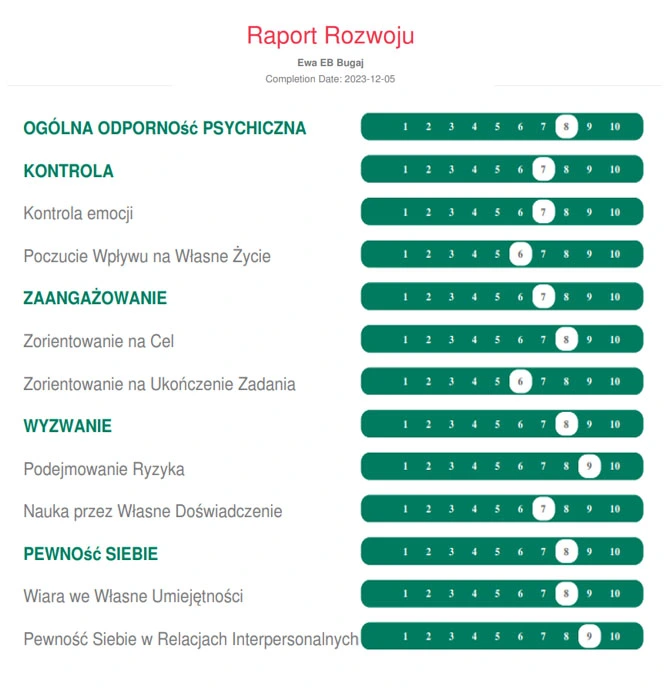

Test MTQ · Test MTQ+
Zbuduj odporność psychiczną,
która daje przewagę
Odkryj, jak test MTQ pomaga działać skuteczniej, podejmować lepsze decyzje i zachować spokój pod presją. Certyfikowane narzędzie psychometryczne uznane na całym świecie.
Gwarancja satysfakcji · 500+ przeprowadzonych badań
Model 4C
Czym jest odporność psychiczna?
Odporność psychiczna to zdolność radzenia sobie z presją, stresem i wyzwaniami w sposób, który pozwala zachować skuteczność działania i wewnętrzną równowagę. To nie „zimna twardość", ale elastyczność i siła, która pozwala wracać do równowagi nawet w najtrudniejszych momentach.
4 filary odporności psychicznej
Kontrola
- Zarządzanie emocjami
- Poczucie wpływu na własne życie
Zaangażowanie
- Zaangażowanie na cel
- Skupienie na ukończeniu zadania
Pewność siebie
- Pewność siebie w relacjach
- Poczucie własnej wartości
Wyzwanie
- Nauka przez własne doświadczenia
- Podejmowanie ryzyka i adaptacja
Psychologowie i trenerzy na całym świecie podkreślają, że odporność nie jest cechą daną raz na zawsze – można ją świadomie rozwijać i wzmacniać w trakcie życia.
Jakie korzyści daje badanie MTQ i MTQ+?
Odkryj pełen potencjał swojej odporności psychicznej
Rozwój osobisty
Wskazuje obszary do wzmocnienia, aby działać skuteczniej w życiu i pracy.
Autodiagnoza
Lepiej rozumiesz swoje reakcje na stres, presję i zmiany w otoczeniu.
Radzenie sobie ze stresem
Konkretne wskazówki i narzędzia dopasowane do Twojego profilu odporności.
Osiąganie celów
Łatwiej utrzymujesz koncentrację i energię w drodze do celu.
Motywacja i wytrwałość
Odkrywasz, co napędza Twoją determinację i jak ją wzmacniać.
Poprawa relacji
Budujesz pewność siebie i skuteczność w kontaktach z innymi ludźmi.
W pracy i biznesie
Wsparcie dla liderów, menedżerów i zespołów – diagnoza mocnych stron i ryzyk pod presją.
W edukacji i sporcie
Narzędzie do wzmacniania uczniów i sportowców – wytrwałość, koncentracja, pewność siebie.
Rozwój zespołów
Raport zbiorczy diagnozuje mocne strony grupy i wspiera efektywność współpracy.
Opinie klientów po teście MTQ
Ponad 1247 osób ukończyło badanie i odczuło realną zmianę
★★★★★
Jestem mega zaskoczona, jak wiele informacji zawiera test MTQ, a spotkanie z Ewą było czymś pięknym. Punkt po punkcie omówiłyśmy każdą odpowiedź z konkretnymi sugestiami – dla mnie to bardzo owocne doświadczenie.
★★★★★
Doskonałe narzędzie do odkrywania siebie z unikalnej, wielowymiarowej perspektywy odporności psychicznej. Ewa jako coach z pasją pomaga wyciągnąć z testu maksimum wartościowych informacji.
★★★★★
Bardzo pozytywne spotkanie i same konkrety. Zdziwiło mnie, jak trafnie Ewa opisała moją osobę mimo pierwszej rozmowy. Dostałem jasne kierunkowskazy, nad czym pracować, aby zwiększyć swoją odporność psychiczną.
★★★★★
Nie sądziłam, że to tak świetne narzędzie. Dzięki niemu rozpoznałam obszary do rozwoju, które wcześniej tylko przeczuwałam. Praktyczne porady Ewy pokazały mi, jak przekuć wnioski w konkretne działania.
★★★★★
Sam test jest ciekawym narzędziem, ale dopiero omówienie z Ewą robi prawdziwą różnicę. Zrozumiałam lepiej swoje wyzwania i dostałam strategię podnoszenia odporności psychicznej. Polecam każdemu.
★★★★★
Serdecznie polecam wykonanie testu i omówienie wyników z Ewą Bugaj. Spotkanie odbyło się w profesjonalnej, a jednocześnie bardzo życzliwej atmosferze. Otrzymałam komplet materiałów i wskazówek do dalszej pracy.
★★★★★
Jestem ogromnie wdzięczna, że test MTQ trafił do mnie w takim momencie. Poznałam swoje najsłabsze punkty odporności psychicznej i dostałam narzędzia do pracy – wierzę, że to będzie game changer w moim rozwoju.
★★★★★
Jestem wdzięczny Ewie za test MTQ oraz jego omówienie – jej profesjonalizm i zaangażowanie są godne podziwu. To spotkanie pomogło mi inaczej spojrzeć na siebie i swoje możliwości. Polecam z całego serca.
★★★★★
Test MTQ okazał się bardzo przydatnym narzędziem do pracy nad sobą. Zrozumiałam, które obszary wymagają poprawy, a które są na dobrym poziomie. Ewa dała konkretne, praktyczne wskazówki – zabieram się do działania z dużo większą motywacją.
Znajdź swój profil
Wybierz kategorię, która najlepiej opisuje Twoją sytuację i cele
Dla Ciebie
Lepiej radzisz sobie ze stresem, zwiększasz pewność siebie i rozumiesz swoje mocne strony. Test MTQ pomoże Ci zrozumieć, co Cię napędza i co hamuje.
Zarezerwuj terminLiderzy i menedżerowie
Wzmocnij odporność psychiczną w roli lidera. Przewodź zespołom, podejmuj decyzje pod presją i unikaj wypalenia zawodowego.
Sprawdź MTQ+Zespoły i organizacje
Diagnozuj mocne strony całego zespołu, zwiększ efektywność współpracy i buduj organizację gotową na zmiany. Raport zbiorczy dla całej grupy.
Zapytaj o ofertęStudenci i sportowcy
Rozwijaj wytrwałość, koncentrację i pewność siebie – kluczowe zarówno w nauce, jak i w sporcie. Odkryj, co napędza Twoją determinację.
Zarezerwuj terminWybierz test MTQ dopasowany do siebie
Każdy wariant zawiera test + sesję omówienia wyników z certyfikowanym ekspertem
Test MTQ
Szybka diagnoza z konkretami – idealne na start
- 48 pytań · ok. 10–12 min
- Skala stenowa (1–10) ogólnej odporności
- 8 podskal modelu 4C w raporcie
- Sesja omówienia wyników (60 min)
888 zł
Test + sesja feedback online
Zarezerwuj termin
Rekomendowany
Test MTQ+
Najszersza analiza dla liderów i osób potrzebujących głębokiego wglądu
- 74 pytania · szczegółowa analiza
- Dodatkowe wskaźniki: charakter, motywacja, wytrwałość
- Rekomendacje rozwojowe krok po kroku
- Sesja omówienia wyników (90 min)
1296 zł
Test + sesja feedback online
Zarezerwuj terminMTQ Zespoły
Kompleksowa diagnoza dla zespołów i organizacji
- 74 pytania na osobę
- Wgląd w motywację i styl działania
- Raporty porównawcze dla liderów
- Rekomendacje dla całej grupy
5588 zł
Wycena indywidualna dla grupy
Zapytaj o ofertę4 kroki do wzrostu
Odkryj pełną ścieżkę rozwoju odporności psychicznej
Wybór i diagnoza
Wybierasz wariant testu i uzupełniasz badanie online. MTQ zajmuje ok. 12 minut, MTQ+ ok. 20 minut. Po ukończeniu otrzymujesz dostęp do szczegółowego raportu.
Sesja z ekspertem
Sesja 1-na-1 z certyfikowanym konsultantem MTQ. Szczegółowa analiza wyników, identyfikacja kluczowych obszarów i odpowiedzi na Twoje pytania. Trwa 60–90 minut online.
Spersonalizowany plan
Otrzymujesz personalizowany plan rozwoju z konkretnymi ćwiczeniami, technikami i harmonogramem wdrażania dopasowanym do Twojego profilu.
Wdrażanie i sukces
Teoria zamienia się w praktykę. 87% uczestników odczuwa poprawę już po 4 tygodniach. Możliwość sesji follow-up i monitorowania postępów w czasie.
Przykładowy raport MTQ+
Twoja transformacja – see how results change over time
Test wykonany pierwszy raz

Po 3 miesiącach pracy

Najczęściej zadawane pytania
Czy mogę zrobić badanie online?
Jak się przygotować do testu MTQ?
Czym różni się MTQ od MTQ+?
Czy raport jest poufny?
Dla kogo jest przeznaczony test MTQ?
Jak długo trwa cały proces?
Bezpłatna konsultacja
Nie wiesz, który test MTQ wybrać?
Umów się na 15-minutową rozmowę – pomogę Ci wybrać idealny wariant i odpowiem na wszystkie pytania.
- Zrozumiesz różnice między MTQ, MTQ+ i MTQ Zespoły
- Otrzymasz rekomendację dopasowaną do Twojej sytuacji
- Dowiesz się, jak wygląda cały proces krok po kroku
Terminy w 48h · Online via Zoom · Bez zobowiązań
500+ rozmów konsultacyjnych · Certyfikat AQR International · 10 lat doświadczenia